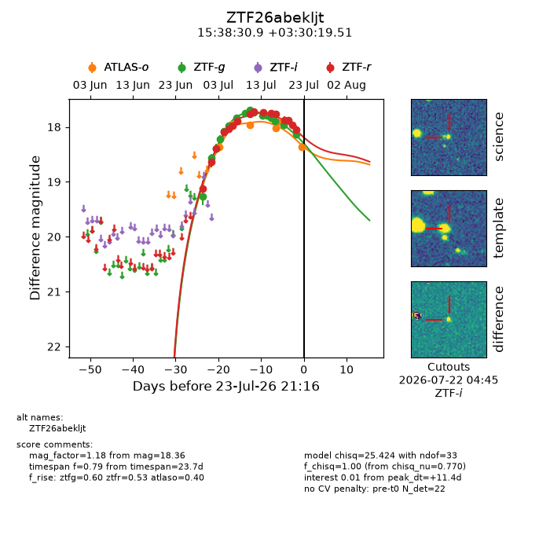
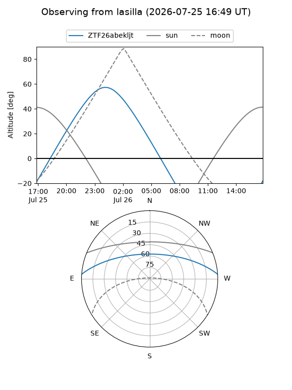
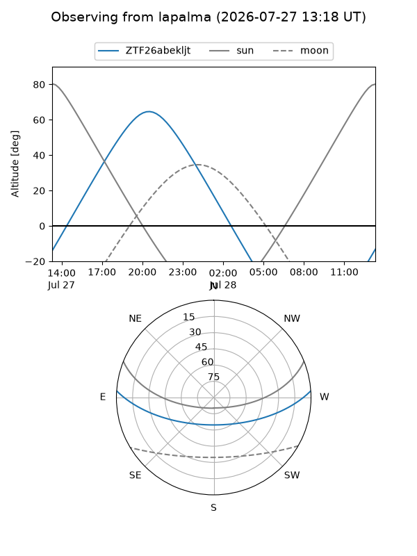
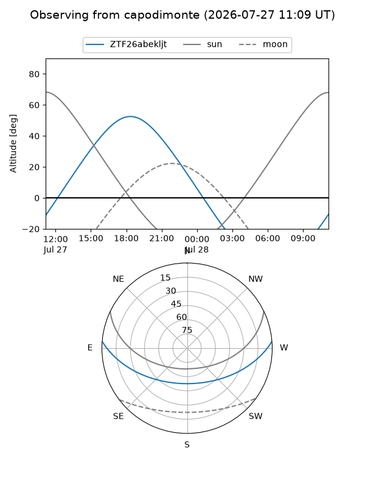
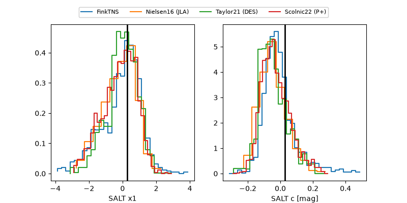

ZTF26abekljt
Target ZTF26abekljt at 2026-07-23 21:19
Aliases and brokers:
FINK-ZTF: ztf.fink-portal.org/ZTF26abekljt
Lasair-ZTF: lasair-ztf.lsst.ac.uk/objects/ZTF26abekljt
ALeRCE-ZTF: alerce.online/object/ZTF26abekljt
Direct TNS query: direct search
alt names
ZTF26abekljt (ztf,fink_ztf)
Coordinates:
equatorial (ra, dec) = 234.6287,+3.50542
equatorial (HMS+DMS) = 15:38:30.89,+03:30:19.51
galactic (l, b) = (9.7272,+43.66350)
Flags:
peak dt: +11.4
Photometry:
last atlaso=18.36, ztfg=18.13, ztfr=18.05
6 atlaso, 16 ztfg, 16 ztfr detections
Lightcurve

Visibility



Additional plots
